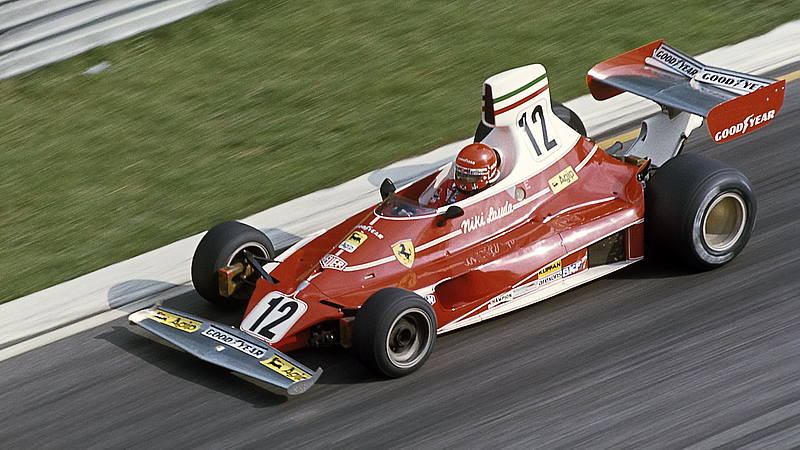

Ferrari F2004
La Ferrari F2004 è considerata una delle vetture di Formula 1 più dominanti e perfezionate di tutti i tempi. Progettata da Rory Byrne e Ross Brawn, la monoposto era un’evoluzione della già vincente F2003-GA, ma con affinamenti decisivi in aerodinamica, affidabilità e distribuzione dei pesi. Equipaggiata con un motore V10 da 3.0 litri, la F2004 univa potenza brutale a una sorprendente efficienza meccanica. Al volante c’era Michael Schumacher, che nel 2004 conquistò il suo settimo titolo mondiale vincendo 13 gare su 18, affiancato da Rubens Barrichello, anche lui più volte vincitore. La F2004 portò alla Ferrari il sesto titolo costruttori consecutivo, confermando l’epoca d’oro della Scuderia. Ancora oggi, è ricordata non solo per i risultati straordinari, ma anche per l’eleganza e la purezza del suo design. Un simbolo assoluto della supremazia Ferrari in Formula 1.
FERRARI 312T
La Ferrari 312T è una delle monoposto più vincenti e rivoluzionarie della storia della Formula 1. Progettata da Mauro Forghieri, fu introdotta nel 1975 e rimase in evoluzione fino al 1980. La sua principale innovazione era il cambio trasversale (“T” sta proprio per transversale), che migliorava la distribuzione dei pesi e la maneggevolezza, rendendola estremamente competitiva. Spinta da un potente motore 12 cilindri boxer, la 312T univa potenza e affidabilità in un’epoca in cui la meccanica faceva ancora la differenza. Con Niki Lauda, la Ferrari tornò al vertice, vincendo il mondiale piloti nel 1975 e dando inizio a una serie di successi che portarono in totale 3 titoli piloti e 4 costruttori. Fu guidata anche da Jody Scheckter, che nel 1979 riportò il titolo a Maranello. Iconica nel design e storica nei risultati, la 312T è un simbolo dell’ingegno Ferrari e della sua rinascita negli anni '70.
Ferrari F2007
La Ferrari F2007 è la monoposto con cui la Scuderia di Maranello conquistò l’ultimo titolo piloti della sua storia (finora), con Kimi Räikkönen protagonista di una straordinaria rimonta nel finale di stagione. Progettata da Aldo Costa e Nicolas Tombazis, la F2007 fu la prima Ferrari costruita per regolamenti aerodinamici più restrittivi e senza il controllo di trazione automatico, pur integrando una sofisticata elettronica. Dotata di un motore V8 da 2.4 litri, abbinato a un’eccellente efficienza meccanica, la F2007 eccelleva in trazione e stabilità, soprattutto su piste tecniche. Con 9 vittorie (6 di Räikkönen, 3 di Massa), 9 pole position e una stagione giocata punto su punto contro McLaren e Lewis Hamilton, la F2007 vinse sia il titolo costruttori che quello piloti, grazie a una doppietta nell’ultima gara in Brasile. La F2007 è oggi ricordata come una delle monoposto più bilanciate e decisive nella storia recente della Ferrari in Formula 1.